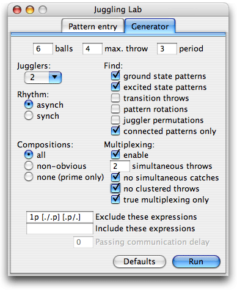

A siteswap generator is a program that finds juggling patterns in siteswap notation. You give the generator a list of parameters that define what kinds of patterns you want it to find, and it finds all patterns that fit the given constraints.
There are three sections in this discussion:
Juggling Lab's siteswap generator panel is shown in the graphic below. To run it for the first time, perform the following steps:

The generator should produce the list of five-ball siteswap patterns shown below.
55555
64555
64645
66355
66364
66625
.
.
.
77461
77722
77731
* 66670 *
* 67273 *
* 67570 *
* 75670 *
* 77272 *
* 77470 *
This is an exhaustive list of patterns satisfying the parameters entered on the panel above. (These parameters were reset to their default values when you clicked the "Defaults" button.) Each line is a separate pattern.
Why do some patterns have a '*' before and after them? These patterns
require some transition throws to get from the cascade (in this case, siteswap 5)
into the pattern, and more transition throws to get from the pattern back into the cascade.
The '*' is just a placeholder to indicate that these transition throws are
required. Check the "transition throws" box on the input panel and re-run the generator;
the explicit values of the transition throws will be filled in.
For example, let's
say you wanted to do the pattern 66670 once from the middle of a cascade.
Because 66670 has transition throws, you can't just switch into it
immediately like this:
... 5555555 666706667066670 ...
^ ^
because of the collision indicated. (The space is there to guide the eye; it doesn't
correspond to a beat in time.) You need a transition throw, in this case a
'6':
... 5555555 6 666706667066670 ...
Similarly, you need a transition throw to get back to the cascade, in this case a
'4':
... 666706667066670 4 5555555 ...
It can be shown that when transition throws are required to get into a pattern, then transition throws will always be required to get back out (and vice versa).
Patterns that require these extra transition throws
are called excited state patterns, and the others without transition throws
are called ground state patterns. The transition throws for an excited state
pattern are not unique; in the case above the sequence '662' could have been used
to exit the pattern 66670. Juggling Lab finds the shortest transition sequences
possible.
Each element of the generator panel specifies a parameter that constrains the generator's search algorithm:
10, 11,
12, ... rather than the conventional
a, b, c, ... of siteswap notation.(r,l), so the period must be a multiple of 2.[33]). These exclusions apply only to the pattern itself, not to the
transition throws of excited-state patterns. "True multiplexing" requires that each pattern have at least one multiplex throw containing no held balls; for example [32] with 5 balls would be excluded.This option is a bit complicated and requires a little deeper understanding of siteswap notation.
One general observation about siteswap patterns is that any two that share the same transition throws can be strung together to get another valid pattern. Thus the two ground state three ball patterns 441 and 3 are combined to get another valid pattern: 4413. In this case we say that 4413 is a composition of 441 and 3.
Another general observation is that you can cyclically rotate the throws in a pattern to get another valid one. Thus 441 can be rotated left to get 414. Note that 414 is not a ground state pattern, as written, since in the following throw sequence:
... 3333333 414414414 ...
^ ^
causes the two indicated throws to collide.
The program generally doesn't list all the rotated versions of the patterns that it finds, since this clutters up the listings. So how does it decide which rotation to display? It displays the rotation that minimizes the length and throw values of the transition throws into the pattern. In the case of 441, this minimum number of transition throws is 0 if the pattern is displayed as 441 (not 414), so it's displayed that way.
Now the three "Compositions" choices break down in the following way:
As an example, consider the three patterns 6316131, 4413, and 51414. The first is not a composition at all, so it will appear regardless of the "Compositions" setting. The second is a composition of two patterns that the program does print, namely 441 and 3; therefore it will be listed only with the "all compositions" setting.
The last pattern, 51414, is a composition of two shorter patterns, 51 (the shower) and 414. When "no compositions" is selected, 51414 will not be displayed. In the "non-obvious compositions" setting, however, this pattern will be displayed because, although 51 is displayed as such by the generator, 414 will be displayed as its ground state rotation 441. If you were looking at a generator listing you would see 51 and 441 with different transition throws, and it wouldn't be obvious that you could rotate the latter and tack it onto the former. These kinds of compositions are called non-obvious.
The default setting is to show all compositions.
This tells the generator what class of patterns to find: Ground state patterns,
excited state patterns, or
both. The "transition throws" option causes transition throws to be printed
for any excited state patterns found -- otherwise '*' is
printed as a placeholder. The "pattern rotations" causes all rotations of a pattern to be printed, for example
441, 414, and 144 would each be printed separately.
The "juggler permutations" option applies when generating passing patterns. As a default, the generator will avoid displaying multiple patterns that are just the same pattern with the jugglers reordered (permuted). For example, the two passing siteswaps <3|4p><2p|3> and <4p|3><3|2p> are the same pattern with the jugglers swapped, so only one of them is shown by the generator. You can show all permutations as distinct patterns by selecting the "juggler permutations" option. (Note: The algorithm Juggling Lab uses to exclude juggler-permuted duplicates is not guaranteed to exclude all of them, although it does exclude the vast majority.)
"Connected patterns only" also applies only to passing patterns. Selecting this option filters out any passing patterns that are two or more patterns (each with fewer jugglers) done together. A simple example is <5|3><1|3>, which is two jugglers standing next to each other doing solo juggling tricks.
Values entered here specify terms that filter the generator output. Exclude eliminates
all patterns that match any of the supplied terms, and include eliminates all patterns
that don't match at least one of the supplied terms. Multiple terms may be provided for
each, separated by spaces. For example an exclude of 11 2 3 [54] filters out
all patterns containing at least one of the following: The throw combination
11 (two 1s in a row), throws 2 or 3, or the multiplex throw [54].
Filters can match patterns as well as literal terms. The terms supplied can be
any regular expressions, with a syntax adjusted
to accomodate siteswap pattern notation. For example an exclude term
of <3p|.*> excludes all passing patterns where the first juggler throws
a 3p (the '.*' is a wildcard that matches against any string of characters).
As another example, the "true multiplexing only" option is implemented for solo asynch patterns with the [\[^2\]*]
include term.
This delay setting only has an effect when there is more than one juggler. If you are doing a standard ground state passing pattern (see definition below; an example is <3p|3p><3|3> for six objects), then by definition you and your partner can switch into any ground state pattern instantly with no transition throws. However, many siteswap patterns will require you both to start throwing differently at the same time.
An analagous situation with a single juggler is
if I wanted to switch from the pattern (4,4) into
(4x,4x). No transition throws would be required, but both
of my hands would have to start throwing 4x's at exactly the same
time. There is no issue with communication/synchronization when a single juggler is controlling the entire pattern,
but it can be an issue in passing. Pattern transitions that require immediate
change in throwing behavior from several jugglers typically require the jugglers to count
down to the pattern transition in order to ensure synchronization.
It is nice to allow for a communication delay, though, so that person #2 has time to react when person #1 starts throwing a trick (many of the popular passing tricks have this property). This is what this setting determines. The number you input is the number of throws after the beginning of the trick before person #2 needs to throw something different from what he was while doing a standard ground state pattern (like <3p|3p><3|3>).
A few words need to be said about what constitutes a "standard ground state pattern". These are those patterns composed of ground state patterns of length 1. For 6 objects, for example, run the generator with the settings: (balls=6, max throw=4, period=1, jugglers=2, find=ground). You get two ground state patterns of length 1: <3|3> and <3p|3p>. Any combination of these stuck together qualifies as a "standard ground state pattern"; these include standard two-count passing <3p|3p><3|3>, ultimate passing <3p|3p>, and so on. The delay flag lists all patterns which provide the requested communication delay for at least one of these "standard passing patterns". Whew, this is complicated.
As an example, run the generator with settings: (balls=6, max throw=4, period=3, jugglers=2, find=ground, delay=2). (Note that the "excited state patterns" box must be unchecked for the communications delay field to become active.) The list includes the following two patterns; the juggler in the left slot is the one "leading" the tricks:
<4|3p><4p|3><3|1>
which assumes the people were doing the
standard <3p|3p><3|3> before the trick was
being done. Note that person #1 has to begin
when his partner is throwing a pass.
<4p|3p><4p|3p><3|1>
which assumes the people were ultimate
passing before starting the trick.
Some of the patterns will require a 2-count passing pattern to get the requested communication delay, others a 3-count, and so on. When you use this feature just scan the list for the patterns relevant to your case.
As a final example, run the generator with settings: (balls=6, max throw=3, period=3, jugglers=2, find=ground, multiplexing=enabled, # allowed throws=2, delay=3). One of the patterns is the popular "left-hand single" multiplexing pattern: <2|3p><2p|3><[3p/2]|3p>. Note that the communication delay setting of 3 has vastly reduced the number of tricks found.
In general the number of siteswap patterns is very large, larger than you can possibly sift through in a lifetime. To find interesting patterns, the challenge is to constrain your search as much as possible. If you give the generator parameters that are too broad, it will automatically stop rather than run indefinitely (the limits are 1000 patterns found or 15 seconds elapsed, whichever comes first).
Some general tips on constraining the search:
'3's in 5-ball patterns. I also might exclude the '1p' and '2p'
fast-passes.The siteswap generator can also be run as a command line application; see the script
called j2 included with the distribution. When run in this way the
generator by default has no limits on time or pattern count, so this is a good option
for big searches.